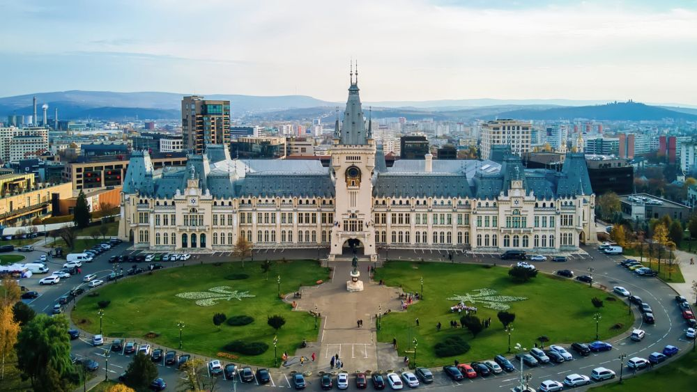

Descoperă Iași - O comoară culturală și academică
Iașiul este un oraș plin de istorie și cultură din România, oferind o varietate de atracții captivante pentru vizitatori:
-

Palatul Culturii - Monument istoric
O clădire impresionantă cu influențe arhitecturale gotice și renascentiste, găzduind muzee importante.
-

Biserica Sfânta Maria - Bijuterie arhitecturală
Unul dintre cele mai vechi lăcașe de cult din Iași, cu arhitectură ortodoxă deosebită.
-

Grădina Botanică - Oază de verdeață
Un loc liniștit pentru a explora o varietate de plante și flori exotice din diverse colțuri ale lumii.
-

Moștenire literară - Loc al culturii
Iașiul este considerat o importantă capitală literară și academică, cu o istorie bogată în scriitori și gânditori.
-

Viața de noapte - Distracție și relaxare
Orașul oferă o gamă variată de restaurante, baruri și cluburi pentru a vă bucura de serile în Iași.
Concluzii
Iașiul combină tradiția cu modernitatea, oferind o experiență autentică și plină de cultură pentru vizitatori.